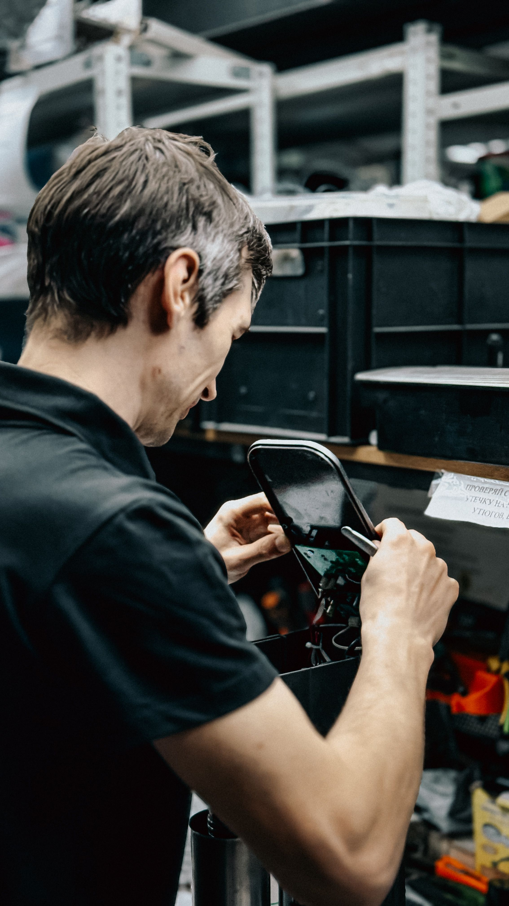
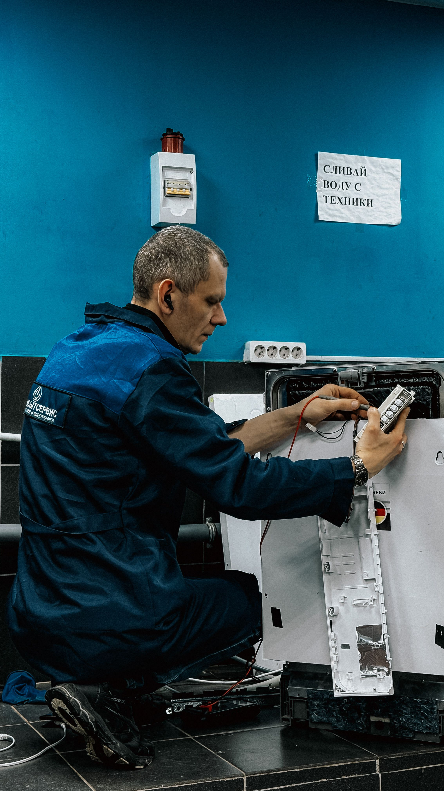

Antes de reemplazar, ReVive.
Conectamos tus productos dañados con reparadores de confianza de tu
comunidad. Repara, ahorra y cuida el planeta.
Cuando un producto deja de funcionar, muchas personas no saben dónde
repararlo, cuánto debería costar el servicio o en qué técnico confiar.
En lugar de reparar, terminan comprando algo nuevo, lo que genera más
residuos y más gasto. ReVive quiere cambiar eso: hacer que reparar sea
la opción fácil, confiable y económica.
Publicar una solicitud

Cómo funciona
Usar ReVive es muy sencillo. Solo tienes que seguir tres pasos.
1
Publica tu solicitud
Elige la categoría del producto, describe con tus palabras qué le pasa,
indica en qué zona vives y, si quieres, agrega algunas fotos del daño.
Publicar es gratis y solo te toma un par de minutos.
2
Compara reparadores
ReVive te muestra los reparadores de tu zona que trabajan ese tipo de
producto. Puedes revisar su experiencia, sus especialidades, las
calificaciones que les dieron otros clientes y los comentarios que
dejaron. Así eliges con confianza y no a ciegas.
3
Contacta y califica
Escríbete con el reparador para aclarar dudas y acordar un precio
estimado. Cuando termine el trabajo, dejas tu reseña y una
calificación. Eso ayuda a los siguientes usuarios y premia a los
reparadores que hacen bien su trabajo.
¿Qué puedes reparar?
Empezamos con dispositivos electrónicos porque son los que más se
reemplazan sin necesidad. Poco a poco iremos sumando más categorías.
Computadoras
Portátiles y de escritorio: cambio de disco, limpieza, formateo, pantallas y teclados.
Celulares
Cambio de pantalla, batería, puerto de carga, botones y problemas de software.
Electrodomésticos
Licuadoras, microondas, ventiladores, planchas y también línea blanca.
Bicicletas
Ajuste de frenos y cambios, arreglo de pinchazos, cadena y ruedas.
Muebles
Reparación de madera, cambio de tornillería, tapicería y acabados.
Ropa
Arreglos de talla, cierres, dobladillos y confección a medida.
Reparadores de tu comunidad
Todos los reparadores tienen un perfil verificado donde puedes ver su
experiencia y las opiniones reales de otros clientes.

Juan Pérez
Reparación de celulares y tablets
★★★★★ 4.9 (128 opiniones)
Zona: Tlahuelilpan y alrededores
Ver perfil
Ana Torres
Computadoras portátiles y de escritorio
★★★★★ 4.8 (94 opiniones)
Zona: Tepeji del Río
Ver perfil

Carlos Ramos
Electrodomésticos y línea blanca
★★★★☆ 4.6 (71 opiniones)
Zona: Atitalaquia
Ver perfil
Nuestro impacto
Cada producto que se repara en lugar de tirarse es un paso hacia un
consumo más responsable. Estos son algunos números de la comunidad.
+1.200
reparaciones realizadas a través de la plataforma
8 toneladas
de residuos electrónicos que se evitaron
350
reparadores y talleres pequeños con nuevos clientes
Lo que dicen nuestros usuarios
Opiniones reales de personas que decidieron reparar en lugar de reemplazar.
"Pensé que mi laptop ya no tenía arreglo y estaba por comprar otra. En
ReVive encontré un técnico a diez minutos de mi casa que me la dejó
como nueva por una tercera parte de lo que costaba una nueva."
María G., Tula
"Lo que más me gustó fue poder comparar a los reparadores por sus
opiniones antes de decidir. Elegí al mejor calificado y quedé muy
conforme con el trabajo."
Diego R., Tepeji del Río
"Tengo un taller pequeño y siempre me costó conseguir clientes nuevos.
Desde que estoy en ReVive me llegan solicitudes cada semana y la
plataforma es muy fácil de usar."
Carlos M., reparador